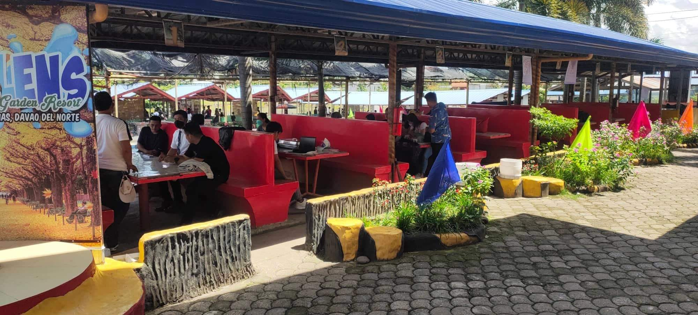
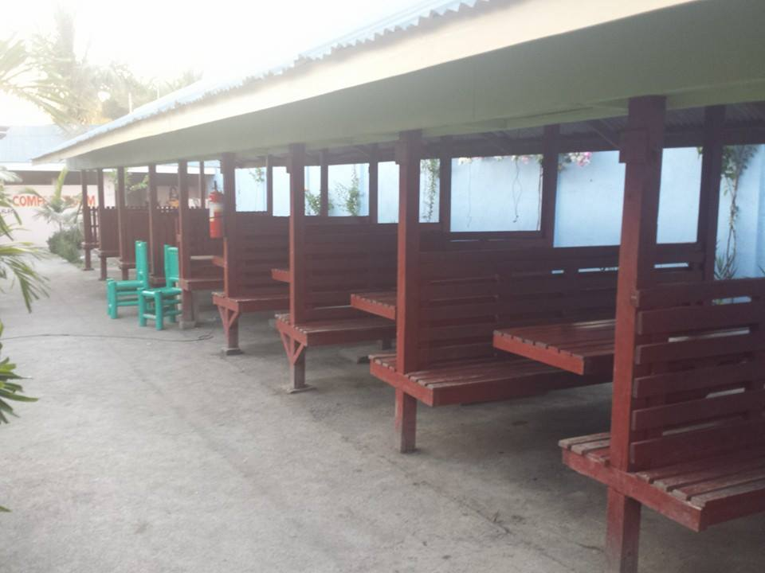

Cottages
Cottages are structures around the pool where guests gather to enjoy the scenery and the access to the pools. With roofs to sheild from the weather, and tables and chairs for feast and rest, they offer a haven for people who want to have fun in the resort.

Red Cottages
Big red cottages along the main pool
- ₱350 per cottage
Big red cottages are great for large families or friend groups!
Its location between the adult and kiddie pools give easy access for swimming to kids and grown-ups alike.
- ₱350 per cottage

Wooden Cottages
Wooden cottages along the side of the resort
- ₱350 per cottage
These wooden cottages are great if you need some distance away from the hustle of the pools!
In these cottages, you can just rest and admire people's enjoyment and recreation.
- ₱350 per cottage